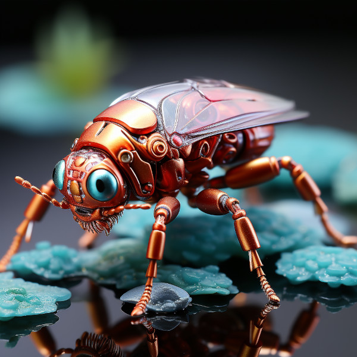

Technologies of the Setsafar Commonwealth
Nodus: Interstellar Communication

Figure 1: Nodus Interstellar Communicator
Nodus is a device made up of
- Linker
- Dilation module
- Lorenza corrector
- Kill switch
Linker
The Linker creates a quantum link between the caller and reciever, and particles are formed on the recieving end forming a completely particle replica of the caller. All bodily sensations such as hearing, seeing, touching, and tasting are transmitted to the reciever.
Dilation module
The dilation module dilates the time of the caller to that of the reciever. Only if time frames are synced can meaningful transmission take place. If time dilation is too great, the reciever can also use the dilation module to change their time dilation, forming a less disruptive time dilation medium for both participants. The need for this is rare, and is usually only needed for when traveling hyperspace or for terraform projects, when time dilation differences can sometimes be extreme, depending on the level of terraform progress.
Lorenza corrector
The Lorenza corrector can correct both sender and reciever time dilations in cases where such dilations fluctuate. Mostly during hyperspace travel. The Lorenza corrector is set with a max value, at which point the correction is abandoned. This can be necessary when unpredicted circumstances arise during communication.
The Kill switch
The kill switch is what disconnects the quantum link between sender and reciever. It activiates on hangup, which may occur when the Lorenza corrector has hit its max setting, or if harmful transmissions are made to the connected reciever from the other end. There is some linking between the communicator and the Kill switch that has to occur to make this possible.
Gravity Mining

Figure 2: Blackhole’s Ecrretion Disk
Gravity mining is the process of creating entirely new substances through the use of extremely strong gravitational pull, from the likes of a neutron star or black hole. The easiest manner to describe this process in the real world, is essentially, two particles are bound through quantum mechanics, and once bound, one particle is isolated in a gravity-free container, at absolute zero, and the other is flung into a neutron star or black hole. At a certain point, the linked particle is unlinked, and is something entirely different. What substance you ended up with depended entirely on the starting mass, the gravitational pull of the other particle, the link strength of the two particles, and at which stage the unlinking process begun. The linking and unlinking processes became known as “quantum linking”. Because the actual matter being used matters very little, and the abundance of matter to use for the process, and even the ability to recycle the created substances, it is possible to mass produce several entirely new substances. Two of the most common substances produced are Saruleum, a super fuel for space travel, and Baruleum, a metal that can withstand speed of light travel.
Saruleum (Garunzal)
- From the ancient tongue (similar to Latin), meaning “blue”.
- Color is silver with streaks of blue light
Saruleum is a soft metal with unusually high levels of electro-magnetism. It is used in lining of fuel tanks for stabilizing anti-matter fuel.
Baruleum (Sangorn)
A hard and heavy metal. Where Saruleum is used to line a spacecraft’s fuel tank, Baruleum is used to line the exterior of the craft to withstand “faster-than-light” travel.
Systhalium (Valmaur)
This would be a hard, but also durable stone or marble like substance, that has the same melting temprature of steel. But more maleable than steel. It is a poor conductor of heat, so it takes a long time to melt, but cools very quickly. Maybe seen as a type of clay, but way more durable.
Nanobots

Figure 3: Incubation Unit for Nanobots
Uses
- Medical Tasks:
- Repair Tasks:
- Hull and Fuel Tank integrity maintenance
- Real-Time Monitoring and Damage Detection: Continuously scan for any structural weaknesses, micro-cracks, or material degradation in both the Baruleum-lined hull and Saruleum-lined fuel tank.
- Precision Repairs: Perform micro-level repairs on the Baruleum and Saruleum materials, ensuring that the hull and fuel tank are always in optimal condition.
- Leak Prevention and Sealing: Identify potential or existing leaks in both the hull and fuel tank, and carry out immediate sealing actions.
- Material-Specific Interactions: Specialized nanobots can work with the unique properties of Baruleum and Saruleum, maintaining or even enhancing their integrity over time.
- Emergency Response: Act quickly to stabilize and repair critical areas during emergencies, such as collision damage or catastrophic material failure.
- Internal circuitry and system repairs
- Circuitry Integrity: Regular scans and repairs of electrical circuits, including reinforcement of weak points and replacement of failed components.
- Real-Time Debugging: Continuous monitoring of software systems to detect and fix bugs, possibly before they even become problematic. This would include AI-assisted diagnosis and issue resolution.
- Resource Management: Monitoring the usage and distribution of power, fuel, and other resources. This could include optimizing existing systems for better efficiency.
- Data Management: Handling the safe storage and retrieval of data, including repairing and maintaining data servers and backups.
Mechanical Systems: Physical inspections, lubrication, and fine-tuning of moving parts in machinery and other equipment.
- Hull and Fuel Tank integrity maintenance
Microbots

Figure 4: Microbot robo-insect
- Component replacement or upgrades
- Micro-Component Swap-Outs: Changing out very small, delicate components that larger bots might struggle with. Think semiconductors or micro-transistors.
- Surface-Level Inspections: Conducting a microscopic analysis of the new components to ensure they’re free from imperfections or microscopic cracks that could lead to failure.
- Software Sync: Updating the micro-level firmware of the new component, if applicable.
- Resource Tagging: Labeling or marking the new components in some way to signal that they have been replaced or upgraded. Maybe they could imprint a microscopic QR code or something similar.
- Nano-Level Material Coating: If a component needs a particular coating for protection or functionality, the nanobots could apply it.
- Initial Soil Creation & Maintenance: Breaking down existing materials to create arable soil and continuously maintaining its quality.
- Nutrient Distribution: Ensuring that essential nutrients are evenly distributed throughout the soil.
- Environmental Regulation: Constant monitoring and adjustment of soil pH, moisture, and temperature.
- Toxin & Pest Removal: Extracting or neutralizing toxins and harmful microorganisms in the soil or atmosphere.
- Climate Manipulation & Weather Prediction: Small-scale adjustments that could lead to larger climate shifts and predicting weather patterns for optimal farming.
- Biological Seeding & Biodiversity Maintenance: Introducing and maintaining bacterial or other microbial life to create a complex, healthy ecosystem.
- Resource Mapping & Resource Optimization: Scanning the local geography for essential elements or minerals and ensuring their optimal utilization for farming and other needs.
- Defensive Measures & Disaster Mitigation: Protecting the terraformed areas from local conditions that could be harmful and mitigating the impact of natural disasters on the soil.
- Monitoring and Data Collection: Keeping track of all the various metrics and sending the data back to a central location for analysis.
- Crisis Response: Quick deployment to deal with immediate issues like disease outbreaks or sudden climatic changes that could affect soil or plant health.
- robo-insects
Robo-insects are used for polination of crops, and also for fertilizing and caring for the crops. They also defend against locusts and other creatures like them. This may entail carrying nanobots to the threatening organism that will keep them from swarming, or it may entail all out combat against the locusts.
Computing
Emphasis on Lambda Calculus
MayimLisp
Very similar to our Scheme. Minimalistic, extensive